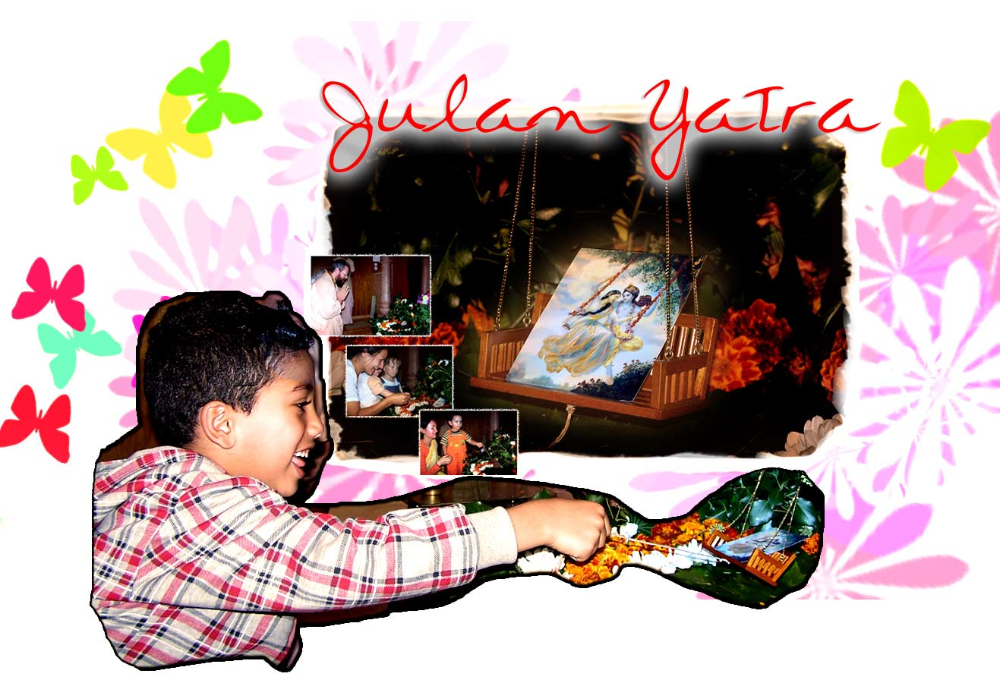

 |
||
Hola amigos, aqui les tenemos las imagenes del festival de Julan Yatra celebrado en el Radha Govinda Mandir de Berlin, Con la auspiciosa precencia de Srila Guru Maharaj, y muchos niños grandes y chicos.... Para ver las fotos has click <<< AQUI >>> |
||